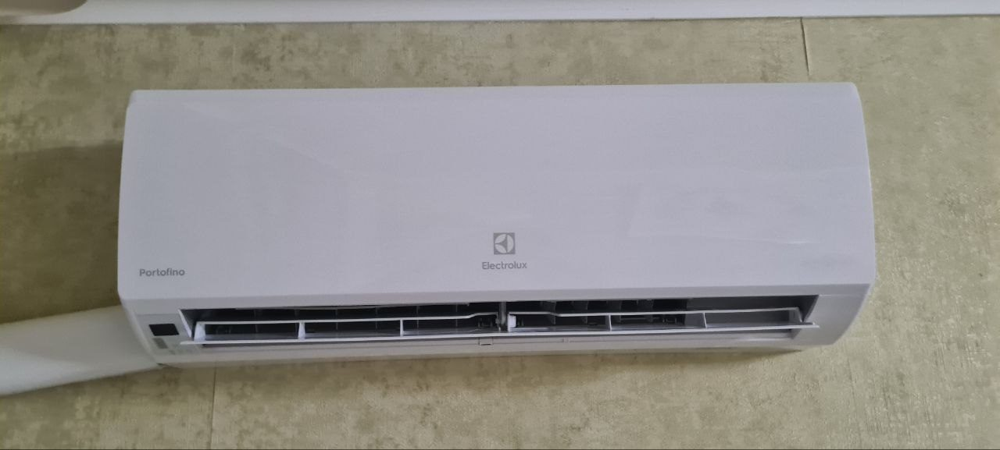

Главная → Обслуживание кондиционеров в Могилёве
Обслуживание кондиционеров в Могилёве
Плановое обслуживание продлевает жизнь кондиционера, возвращает ему мощность охлаждения и убирает неприятный запах. Приезжаем, как правило, на следующий день после звонка.
- Работаем с 2018 года
- Более 9 000 клиентов
- Сервис круглый год
- 5,0 ★ на Яндекс Картах
- Аварийный выезд в день обращения
Что входит в обслуживание
- Чистка фильтров и теплообменника внутреннего блока
- Дезинфекция от бактерий и плесени
- Проверка давления фреона и дозаправка при необходимости
- Проверка дренажа, чтобы кондиционер не капал
- Проверка работы во всех режимах
Зачем регулярно чистить кондиционер
- Чистый воздух. Во влажном теплообменнике и фильтрах оседают пыль, шерсть, споры плесени и бактерии. При включении всё это разносится по комнате и может вызывать аллергию, кашель и раздражение дыхательных путей. Особенно это опасно для детей и астматиков.
- Нет неприятного запаха. Затхлый запах при включении появляется из-за грибка и плесени в дренажном поддоне и на испарителе.
- Экономия электроэнергии. Через грязные фильтры и забитый теплообменник плохо проходит воздух, компрессор работает дольше и на пределе, и расход электроэнергии растёт на 15–25%.
- Кондиционер хорошо охлаждает. Без чистки эффективность падает на 20–30%: настройки те же, а в комнате жарче.
- Меньше поломок и дорогого ремонта. Из-за плохой теплоотдачи растёт нагрузка на компрессор, «сердце» кондиционера, и он может перегреться и сломаться. А забитая дренажная трубка приводит к протечкам воды на стену или пол.
Когда пора обслужить
- Кондиционер стал хуже охлаждать
- Появился запах при включении
- Капает вода из внутреннего блока
- Последнее обслуживание было больше года назад
Как проходит обслуживание: видео с наших выездов
Полное обслуживание кондиционера от начала до конца, ускорено в 1,6 раза:
Главные этапы по отдельности:

Свой отдел сервиса
С 2018 года к нам обратились более 9 000 клиентов, поэтому мы создали отдельный отдел сервиса. Многие компании летом заняты только монтажом и продажей кондиционеров, и до ремонта у них просто не доходят руки. У нас есть отдельный отдел сервиса, поэтому ремонтом и обслуживанием мы занимаемся круглый год, в том числе в разгар сезона.
- Руководитель сервиса отвечает за качество и сроки.
- Менеджер заботы принимает заявки, напоминает о плановом обслуживании и остаётся на связи после работы.
- Инженер по обслуживанию занимается только ремонтом и сервисом, его не забирают на монтажи.
Как мы работаем: видео
Работаем со всеми марками
- Daikin
- Mitsubishi Heavy
- Toshiba
- Panasonic
- Hitachi
- LG
- Haier
- Gree
- Midea
- Hisense
- Electrolux
- Ballu
- Royal Clima
- NeoClima
- Energolux
- Funai
- MDV
- Daichi
- Dahatsu
- Chigo
- Green
- Oasis
Цены
Обслуживание «Базовый»Очистка внутреннего блока, обработка внутреннего блока антисептическими средствами против плесени и грибка, чистка фильтров, проверка и обжим контактных групп. | 100 BYN для организаций 150 BYN |
Обслуживание «Полный»Очистка внутреннего блока, обработка внутреннего блока антисептическими средствами против плесени и грибка, очистка наружного блока, чистка фильтров, проверка дренажа, проверка и обжим контактных групп, проверка температурных режимов, дозаправка фреоном до 100 грамм, если требуется. | 150 BYN для организаций 200 BYN |
Как быстро приедем
- Срочный ремонт и аварии: выезжаем в день обращения.
- Плановое обслуживание: как правило, на следующий день.
- Область: платный выезд на следующий день или дешевле, групповым выездом, когда собираем несколько заказов в одну поездку.
Где работаем
Могилёв и район, а также Бобруйск, Осиповичи, Горки, Кричев по договорённости.
Вопросы и ответы
Как часто нужно обслуживать кондиционер?
Для дома достаточно одного раза в год, лучше весной перед сезоном. Для магазинов, кафе и цветочных салонов, где кондиционер работает каждый день, раз в полгода.
Сколько длится обслуживание?
Обычно 1–2 часа на один кондиционер.
Другие услуги в Могилёве
Оставьте заявку
Позвоните или напишите, расскажите, что случилось, и мы подскажем стоимость и время выезда.
+375 29 687-87-17 (A1)
Viber и Telegram: +375 44 768-81-27
Офис: г. Могилёв, ул. Калужская, 15/1, офис 3
Работаем ежедневно с 9:00 до 20:00
Почта: klimat365.pro@yandex.ru